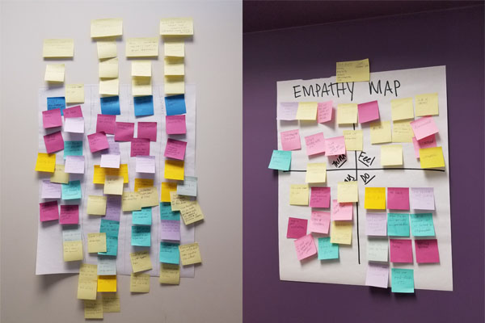
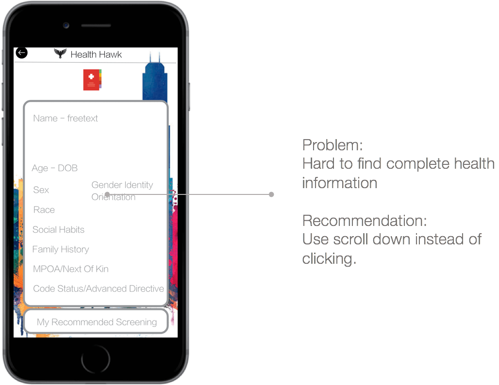

It is inevitable to see doctors in daily life. In addition to the torture of the illness, difficulties still exist in the medical treatment process. Too many paperworks and the obstacle of information transmission spoiled the experience. Researchers from Dell Medical School works with School of information at UT to know about the problem about healthcare and find a way to solve them.
Interview Team: Akanksh K Narayana, Andrea Gutierrez, Erick Silva, Lu Gan, Yifan Gong
Research Team: Lu Gan, Yifan Gong
Client Kickoff
We started our project with a kickoff with Dr. Zito from Dell Medical School. Dr. Zito provided some possible problems from past research.
Problem:
|
Aspects
|
For the patient
|
For the doctor
|
Dr. Zito plans to design a patient-facing mobile application to improve the medical experience of patient.
Key Points: Heavy paperwork, Patient information, Communicate among doctors.
Interview
Recruiting standards:
- Visited doctors more than once over the past 2 years
- Visited different doctors over the past 2 years
- Age between 18- to 65-year-old
Our 10 kind interviewees:
|
25-35: Nurse 25-35: Student X 3 25-35: Construction Management 45-55: Housewife |
 20-25: Sales 25-35: Student 35-45: Pharmacy 55-65: Academic |
A screener is used to select right people to get helpful feedbacks. We conducted a 60-minute interview for each participant. Interview includes seven parts: Introduction, State of Medicine, Discuss the journey, Patient paperwork, Deep-dive, Review challenges, Wrap-up. We discussed the patient journey with participants and dive into each step.
Each member needs to be the screener twice and be the note-taker for other member twice.
Analyze Data
| Coding data from notes. As the raw notes are difficult to read, we coded data and input them into a shared file. Categories are set depend on the content of the note from each note-taker. Eight main categories are cost, paperwork, availability, painpoint, first sign of symptoms, pre-diagnosis, diagnosis, treatment. |
COST
|
AVAILABILITY
|
PAPERWORK
|
PAIN POINTS
|
|
Affinity Diagram We used an affinity diagram based on the stages of patient journey to organize opinions from the interview results. And then each interview team member placed sticky notes under related categories. Empathy Map
We also used an empathy map to gain a deeper insight into customers. Empathy maps are split into 4 quadrants: Think, Feel, Say, Do. |
 |
Journey Map
Usability Testing
Wireframe
Wireframe is designed and created from Dr. Zito.
In order to evaluate the usability of it, we designed 8 tasks and recruited 4 people to finish them.
Heuristic Evaluation
|  | ||
Date: May 2018